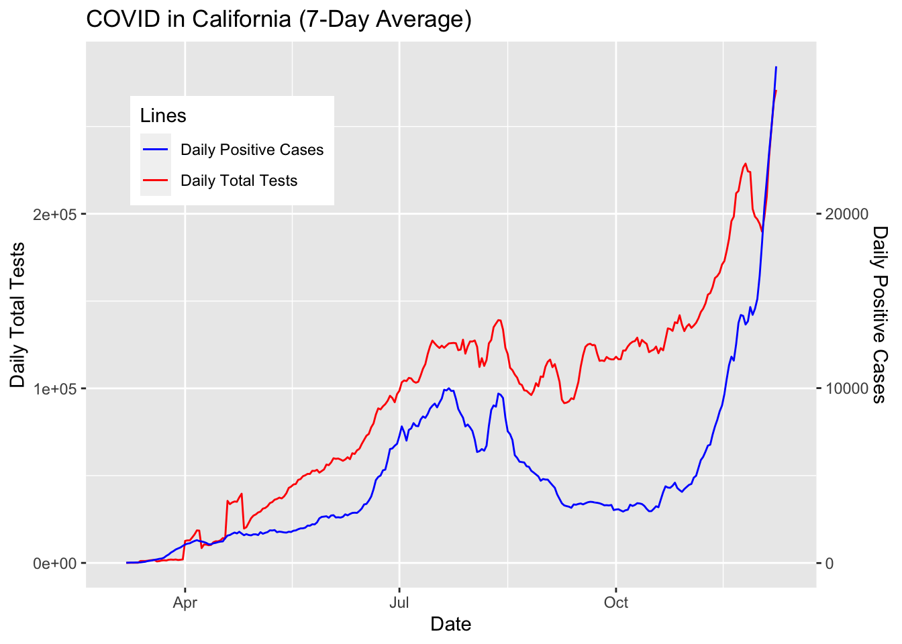
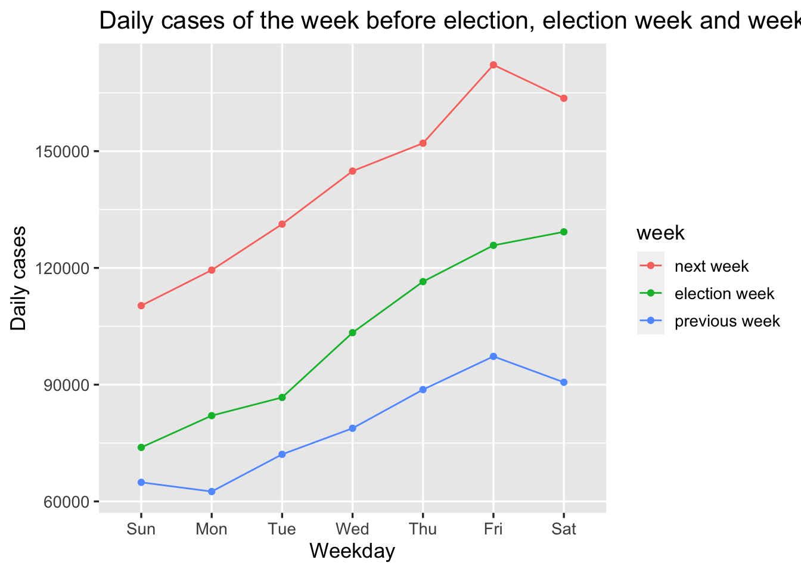

Chapter 7 Conclusion
sample text sample text
 From the graph, we could see California has the largest number of total positive cases. The states CA, TX, FL, IL, and NY’s number of total cases are way larger than other states.
## date state positive positiveIncrease
## 1 20201130 CA 1212968 14034
## 2 20201130 FL 983370 6426
## 3 20201130 IL 726304 6190
## 4 20201130 NY 647980 6819
## 5 20201130 TX 1168111 10838
## 6 20201129 CA 1198934 15614
## 7 20201129 FL 976944 7131
## 8 20201129 IL 720114 7178
## 9 20201129 NY 641161 6723
## 10 20201129 TX 1157273 6204
## 11 20201128 CA 1183320 11996
## 12 20201128 FL 969813 6062
## 13 20201128 IL 712936 7873
## 14 20201128 NY 634438 6063
## 15 20201128 TX 1151069 4024
## 16 20201127 CA 1171324 12635
## 17 20201127 FL 963751 16795
## 18 20201127 IL 705063 7574
## 19 20201127 NY 628375 8176
## 20 20201127 TX 1147045 3429
## 21 20201126 CA 1158689 14640
## 22 20201126 FL 946956 0
## 23 20201126 IL 697489 12022
## 24 20201126 NY 620199 6933
## 25 20201126 TX 1143616 12636
## 26 20201125 CA 1144049 18350
## 27 20201125 FL 946956 8126
## 28 20201125 IL 685467 11378
## 29 20201125 NY 613266 6265
## 30 20201125 TX 1130980 15609
## 31 20201124 CA 1125699 15329
## 32 20201124 FL 938830 8102
## 33 20201124 IL 674089 9469
## 34 20201124 NY 607001 4881
## 35 20201124 TX 1115371 14392
## 36 20201123 CA 1110370 8337
## 37 20201123 FL 930728 6114
## 38 20201123 IL 664620 8322
## 39 20201123 NY 602120 5906
## 40 20201123 TX 1100979 6704 Although CA has the largest number of total positive cases on Black Friday, the daily increase of it on that day is relatively low in Thanksgiving week. It is not surprising to see that Florida has a guge increase on Black Friday compared to day before. New York state also has the highest amount of daily cases on that day. What not intuitive is that California, Texas, and Illinois all have relatively small number of new cases on Black Friday compared with other days in Thanksgiving week.
Although CA has the largest number of total positive cases on Black Friday, the daily increase of it on that day is relatively low in Thanksgiving week. It is not surprising to see that Florida has a guge increase on Black Friday compared to day before. New York state also has the highest amount of daily cases on that day. What not intuitive is that California, Texas, and Illinois all have relatively small number of new cases on Black Friday compared with other days in Thanksgiving week.
## date positive positiveIncrease death weektype weekday
## 1 20201114 10760217 163597 237419 next week Sat
## 2 20201113 10596620 172177 236067 next week Fri
## 3 20201112 10424443 152047 234763 next week Thu
## 4 20201111 10272396 144882 233652 next week Wed
## 5 20201110 10127514 131250 232073 next week Tue
## 6 20201109 9996264 119434 230716 next week Mon
## 7 20201108 9876830 110306 230136 next week Sun
## 8 20201107 9766524 129266 229635 election week Sat
## 9 20201106 9637258 125798 228503 election week Fri
## 10 20201105 9511460 116479 227317 election week Thu
## 11 20201104 9394981 103363 226162 election week Wed
## 12 20201103 9291618 86715 225036 election week Tue
## 13 20201102 9204903 82042 223511 election week Mon
## 14 20201101 9122861 73872 223037 election week Sun
## 15 20201031 9048989 90613 222639 previous week Sat
## 16 20201030 8958376 97263 221669 previous week Fri
## 17 20201029 8861113 88728 220722 previous week Thu
## 18 20201028 8772385 78793 219667 previous week Wed
## 19 20201027 8693592 72097 218622 previous week Tue
## 20 20201026 8621495 62535 217693 previous week Mon
## 21 20201025 8558960 64897 217294 previous week Sun Based on this graph, what surprising is that the election week does not have the largest daily increase but the week after has. This may because the election result causes the people who support Trump to gather more and protest for recounting in some states, which highly increases the chance of close contact and the risk of infection.